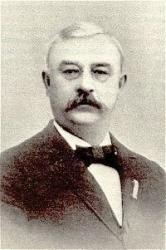

Where My Saviour Leads I_ll Follow SE Samonte
Where My Saviour Leads I_ll Follow SE Samonte
-
¡@
|
Short Name: |
J. Lincoln Hall |
|
Full Name: |
Hall, J. Lincoln (Joseph Lincoln), 1866-1930 |
|
Birth Year: |
1866 |
|
Death Year: |
1930 |
Used pseudonyms Maurice A.
Clifton and Arthur Wilton.
===============
Joseph Lincoln Hall DMus USA 1866-1930.

Born in
Philadelphia, PA, to musical parents, he also was musical, having a good
tenor voice. He was an organist and music teacher. At age 19 he led a 100
member choir for 10 years. He studied music and graduated with honors from
the University of PA, later receiving a Doctor of Music degree from Harriman
University, from which he was an alumnus. In 1896 he married Eva Victoria
Withington, and they had four children. Three lived to adulthood, Lincoln,
Ralph, and Philip. A musician, he was a great song leader and choral
conductor, conducting campmeeting choirs in PA, OH, and FL, at the
Gainesville Bible Conference as well. He became a gospel song composer,
arranger, editor, and publisher. He wrote cantatas, oratorios, choir
anthems, and hundreds of gospel songs. He also edited several hymnals. Along
with Irvin Mack, he founded the Hall-Mack Publishing Company (later
Rodeheaver). They published nine songbooks. He was a member of the 7th
Street Methodist Episcopal Church in Philadelphia. He died in Philadelphia.
John Perry
1 Sweet are the promises,
Kind is the word,
Dearer far than any message man ever heard;
Pure was the mind of Christ,
Sinless I see;
He the great example is, and pattern for me.
Chorus:
Where He leads I¡¦ll follow,
Follow all the way.
Where He leads I¡¦ll follow,
Follow Jesus ev¡¦ry day.
2 Sweet is the tender love
Jesus hath shown,
Sweeter far than any love that mortals have known;
Kind to the erring one,
Faithful is He;
He the great example is, and pattern for me. (Chorus)
3 List' to His loving words,
¡§Come unto Me;¡¨
Weary, heavy-laden, there is sweet rest for thee;
Trust in His promises,
Faithful and sure;
Lean upon the Savior, and thy soul is secure. (Chorus)
Source: Hymns of
Faith #388

|
Short Name: |
W. A. Ogden |
|
Full Name: |
Ogden, W. A., (William Augustine), 1841-1897 |
|
Birth Year: |
1841 |
|
Death Year: |
1897 |
William Augustine
Ogden USA 1841-1897.

Born at Franklin County,
OH, his family moved to IN when he was age six. He studied music in local
singing schools at age 8, and by age 10 could read church music fairly well.
Later, he could write out a melody by hearing it sung or played. He enlisted
in the American Civil War in the 30th IN Volunteer Infantry. During the war
he organized a male choir which became well known throughout the Army of the
Cumberland. After the war, he returned home, resumed music study, and taught
school. He married Jennie V Headington, and they had two children: Lowell
and Marian. He worked for the Iowa Normal School, Toledo Public School
System. Among his teachers: Lowell Mason, Thomas Hastings, E E Baily and B F
Baker, president of the Boston Music School. He wrote many hymns, both
lyrics and/or music. He later issued his first song book, ¡§The silver song¡¨
(1870). It became quite popular, selling 500,000 copies. He went on to
publish other song books. Ogden also taught music at many schools in the U S
and Canada. In 1887 he became superintendent of music in the public schools
of Toledo, OH. His works include: ¡§New silver songs for Sunday school¡¨
(1872), ¡§Crown of life¡¨ (1875), ¡§Notes of victory¡¨ (1885), ¡§The way of life¡¨
(1886), ¡§Gathering jewels¡¨ (1886). He was known as a very enthusiastic
person in his work and a very congenial one as well. He died at Toledo, OH.
John Perry
¡@
1 Where my Saviour¡¦s hand is guiding,
And for all my wants providing¡X
In His precious love confiding,
I¡¦ll go with Him all the way.
Refrain:
Where my Saviour leads I¡¦ll follow,
Where my Saviour leads I¡¦ll follow,
Where my Saviour leads I¡¦ll follow,
I will follow all the way.
2 Though my path be dark and dreary
And my steps be faint and weary¡X
With His loving voice to cheer me,
I¡¦ll go with Him all the way. [Refrain]
3 Though the ills of earth may wound me,
And the storms of life confound me¡X
With His loving arms around me,
I¡¦ll go with Him all the way. [Refrain]
4 When the ties of earth shall sever,
And He calls me home for ever¡X
To the loved beyond the river,
I¡¦ll go with Him all the way. [Refrain]
Source: Sacred
Songs No. 2 #149